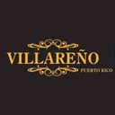

Villareño Cigars (Delvis)
Maestro torcedor / marca · Santa Isabel (Jauca), Puerto Rico
Villareño Cigars (Delvis) aparece en La Hoja Boricua, la guía de cigarros de artesanos boricuas, con 2 cigarros en el catálogo.
Sus cigarros
- Villareño Box Pressed San Andrés Vitolas: Box pressed
- Villareño (surtido) Vitolas: Robusto 5 x 52, Toro 5 x 54, Toro 5 x 56, Torpedo, Perfecto, Nub